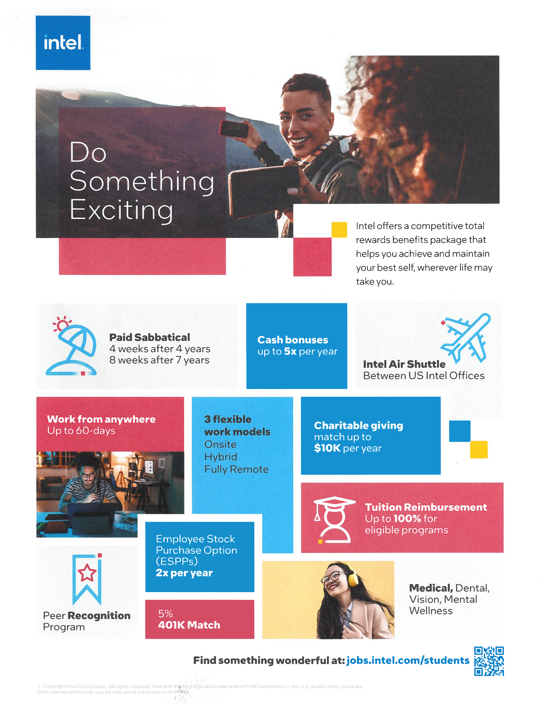
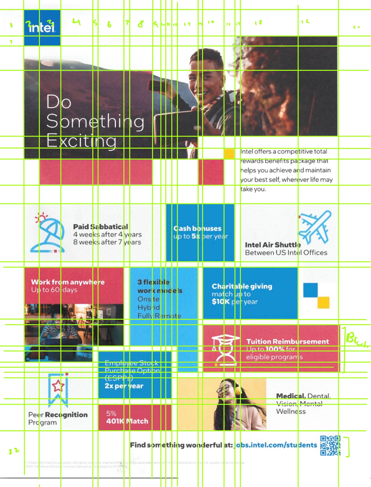
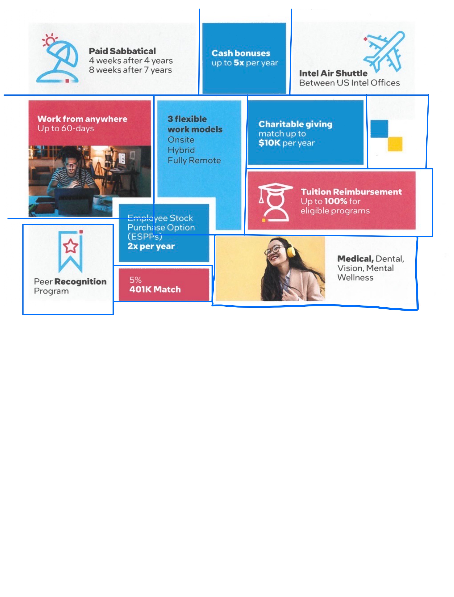
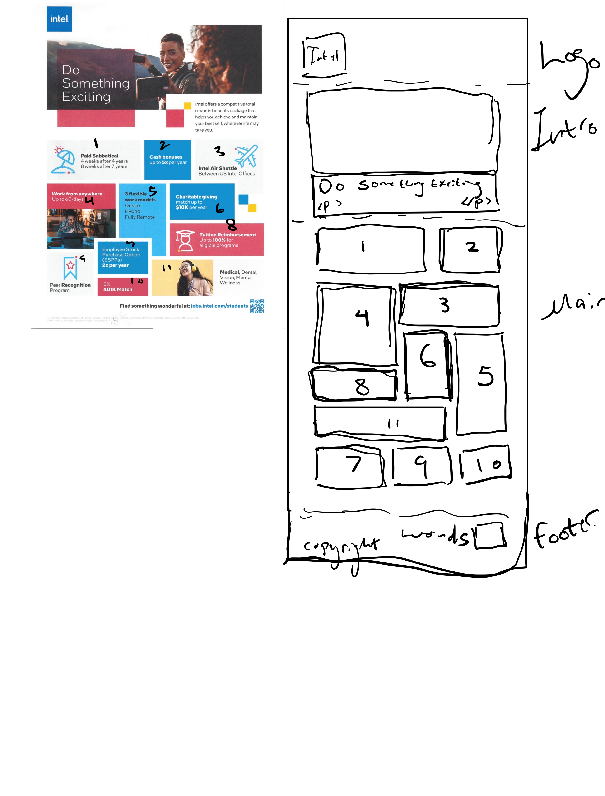

PHASE ONE
Go to spec html
JUMP TO PHASE 2
original image

is link all sources of written content is on this page.
fonts are from google fonts: comfortaa light 300 for content and gabarito bold 700 for all headings.
all crudly drawn images are mine. favicon is from intel
- The goal of the page is as an advertisement for both the phase 1 and phase 2 since in phase 1 it is an ad for intel
to encourage people to apply for jobs at their company. And in phase 2 it would be an ad for a made upi product. For
phase 2 the intended audience would probably be the average person so it would aim to have mass appeal and make the product
seem like something that everyone should have.
- The first thing that I had to tackle was how I was going to seperate the page into its main components

- I was going to go with this initially but then I realized that it would be too many grid lines which would make it much more
difficult to manage the lines and all the boxes that are in the layout

- Deciding to seperate the page into three main sections, I created an overall grid which contained the three main parts of the
page and then seperated the main content area as a grid into a 7 by 9 grid and used the divs that I made in my html to create
boxes in the grid. The numbers in green were used for calculating the fractional size that I wanted to have for the grid boxes.
I used the image below to box out the areas that I needed for the grid.

- To get the polygon shape that some of the boxes have I had to create addition divs that used hte same color as the irregularly
shaped boxes then then apply a nengative top margin to them to make it look like they connected.
-
my sketch for the responsive layout of the page.

PHASE TWO
return to phase 1
IMAGE CREDITS
MY PROCESS
FAvicon was created using this website redketchup
WEBSITE GOAL
-
the goal of the website is supposed to be malicious and meant almost satrically so if anything I wrote happens to deeply
offend you I am terribly sorry.
-
I wanted to make a pretty official looking website that a major corporation could feasibly operate so I did do some research
by looking up infamous MLM and pyramid scheme websites like amway and herbalife and nu to get an idea of what my website should
look like. Of course some of the content on my site itself leans itself in ridiculousness so no one would probably fall for it
but it was still fun to make.
responsiveness and intro
- the greatest challenge I faced during this phase was definitely getting everything to be responsive and I had to use many grids and
flexboxes in order to accomplish that.
- First for the introbox I had to figure out how to get the text and boxes to overlap with the image which i did by overlapping them
in a grid and then giving them new grid column and row positions. Then to make it responsive I took a book out of intel's website
and moved the words to be just a box under the intro img, this time with no overlapping parts.
MAIN CONTENT
-
I also ended up abandoning my old main content area responsive layout because after implementing it I decided that it did not look
very good so i instead just changed it to a large box with the content down the middle. when doing into the mobile view the margins
the side are smaller so the content is easier to see, and the fonts are all enlarged. For the boxes I decided that since they already
had some height values to them that setting the row height of the grid to auto would be fine and it was and then I just had to go in
and adjust some margins and spacing afterward.
-
for some of the additional content that I added I had originally planned for more but that soon proved to be too tall a task so I did
scrap some footer content I was planning on and just added the simple two lines for copyright and accessbility which aren't serious
at all.
-
for the additional content that I did add they were relatively simple to implement and I used flexbox for all three sections of the
additional content. This way when the site was viewed ona mobile device responsiveness would be very easy to implement and adjust
as the images and text just simply wrapped to the next row.
NAV
-
the final thing I had to tackle was the navigation bar which was suprising much less difficult and wayyy less tedious than the
responsiveness of the main content section. I watched a couple videos first on youtube to see how others implemented the function
and then hopped on vscode to try it out for myself. I noticed that every person created a second copy of the list for the nav and
basically just set the sidebar one to off or on if a button was pressed that would only appear once the screen width was small enough
so that's what I did and it turned out pretty well. I couldn't think of a way to get rid of the three bars when i clicked on it wihtout
flattening my nav bar grid since it was the only element in it when the width was small so it kinda just sits in the back of the sidebar
but other wise the sidebar works well and you can close it too.
-
I do have some dummy links that I left just to give off the impression of a more complete site but they don't do anything sorry! :^)
OTHER
-
I had to edit my spec html because its link to the css was going to a folder who's name did not exist
-
there's also a bug where if you resize to mobile size and then click the menu or something and then pull to resize
the menu bar thing stays and doesn't dissapear which I did not have the energy left to fix so unfortunately it stays
-
updated vh of sidebar to account for weird mobile thing with bottom bar of mobile web browsers
{kind=link}